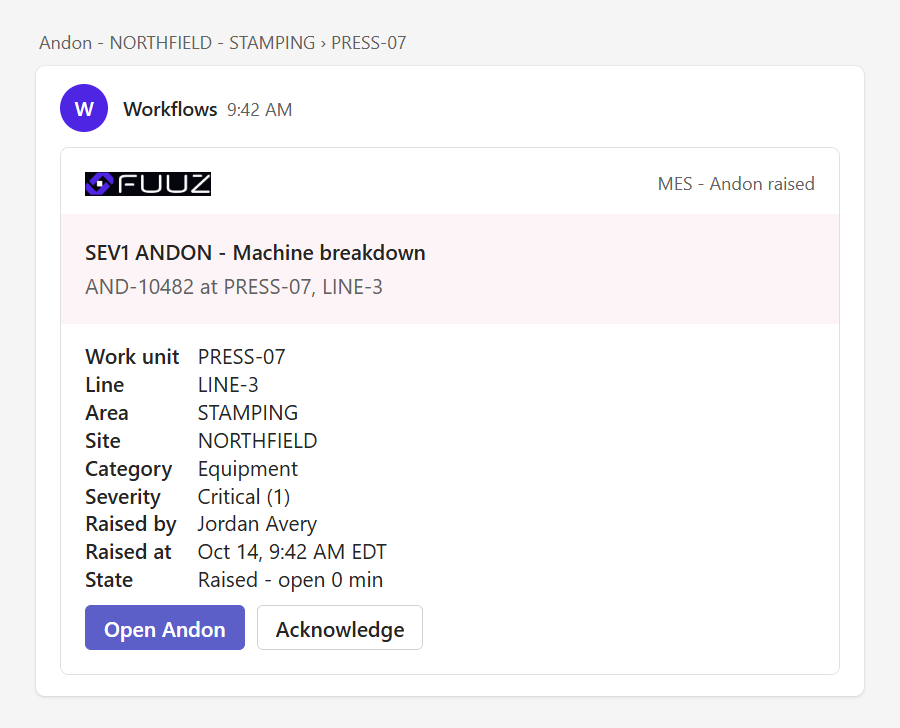
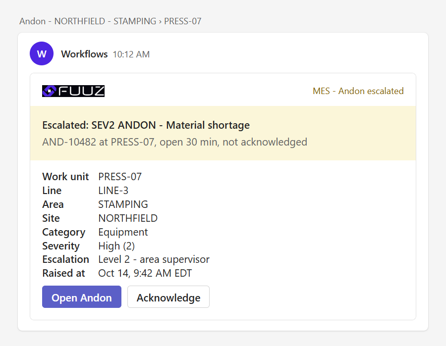
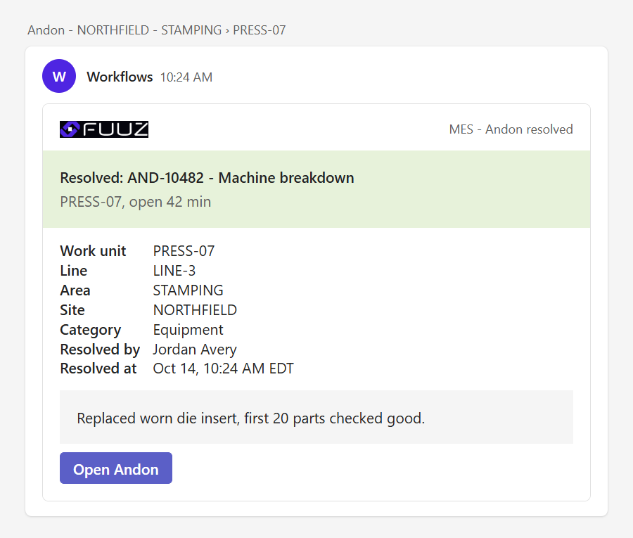
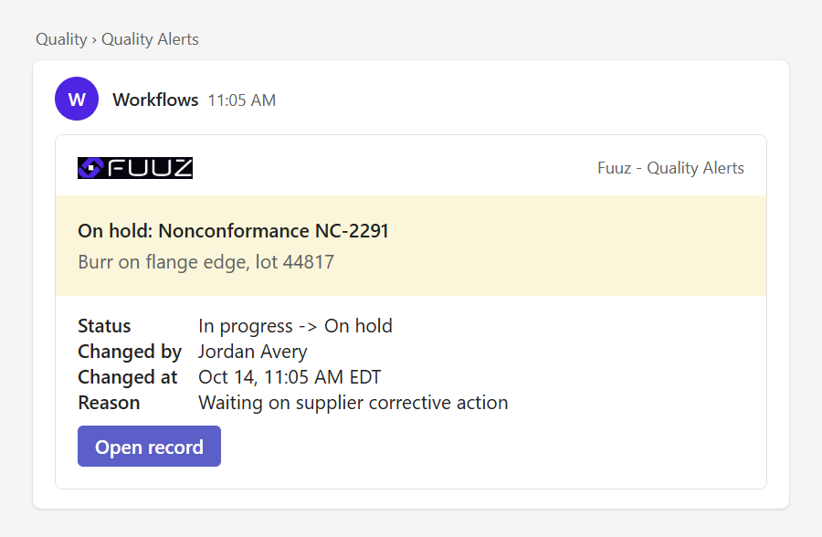
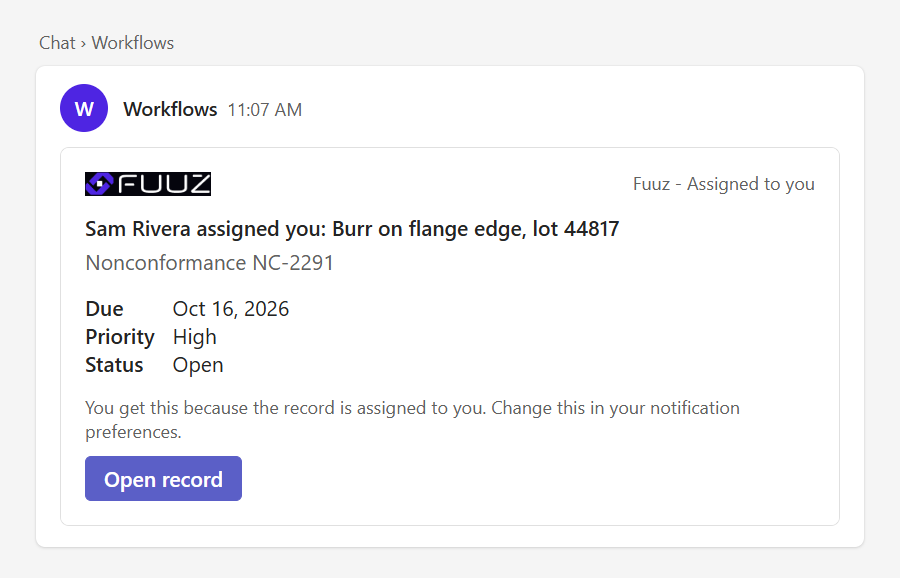
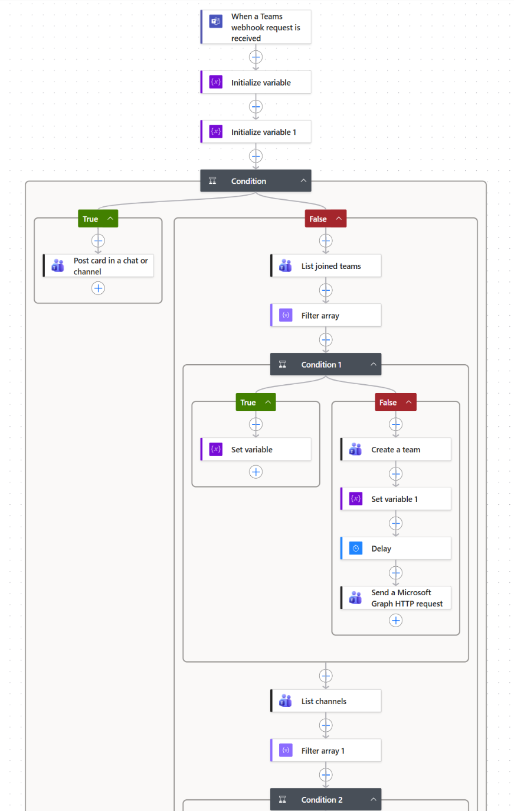
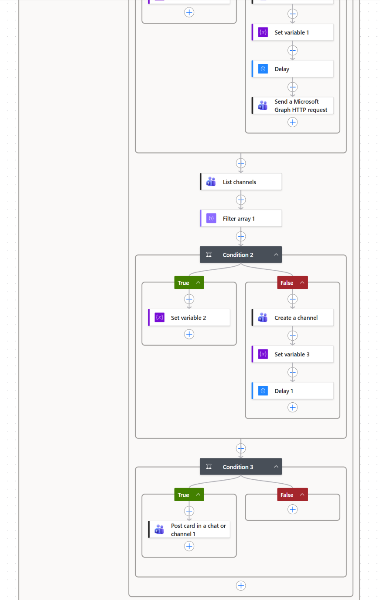
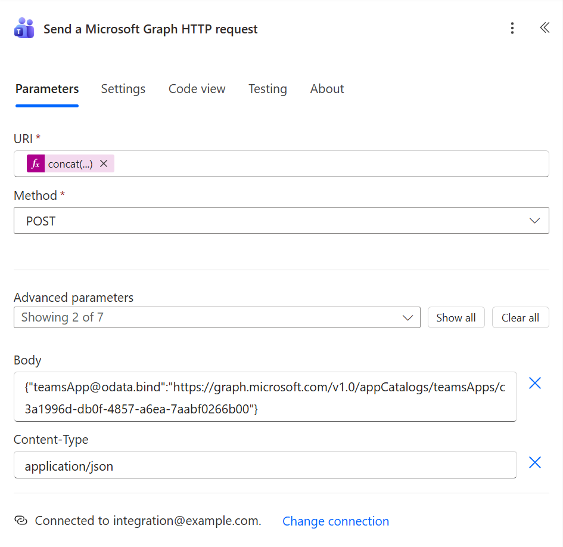
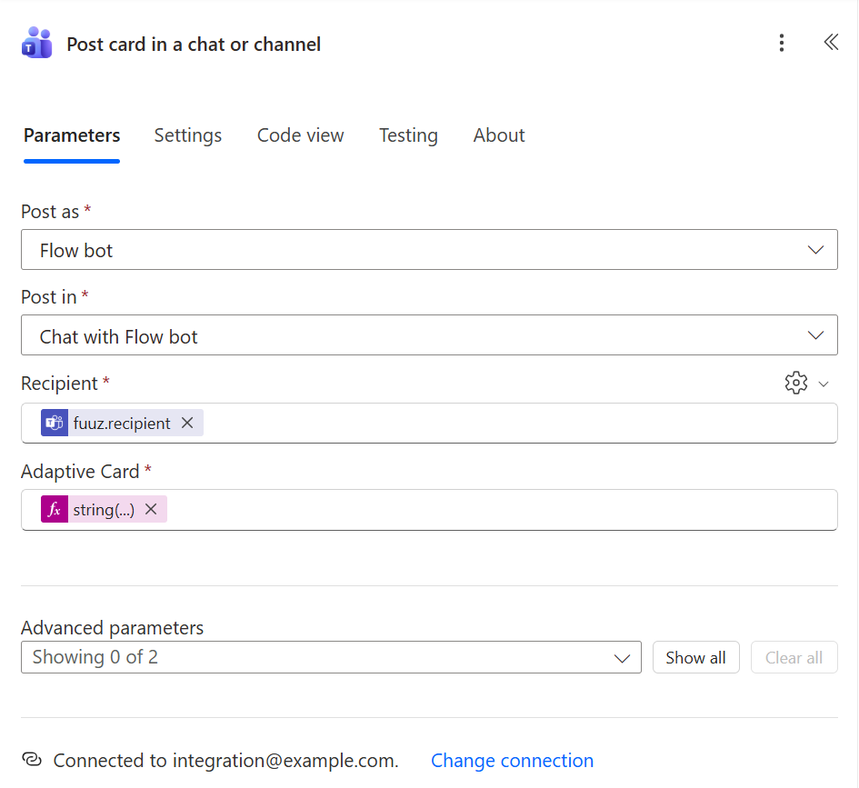

Accelerator · Microsoft Teams
Every Fuuz Event, In The Right Teams Chat
A Fuuz® flow renders an Adaptive Card and posts it to a Power Automate workflow. The workflow delivers it to a channel or to one person — creating the team and channel when they do not exist yet, and installing the bot that posts into them, with no manual step for anyone.
How it works
Two Halves, One Secret URL
Fuuz never holds a Microsoft credential. The only secret is the workflow's trigger URL, and it lives in a Fuuz Connection.
1. Something happens
A record is inserted or changes state. A dataChanges trigger fires after the
commit and hands the flow the record before and after.
2. A detector decides
Is this worth a message, and to whom? Send directly from the event flow, or enqueue to a queue that dedupes, honours per-person preferences and retries.
3. A card is rendered
One renderer turns a small spec into an Adaptive Card with a severity colour, facts and deep links back to the Fuuz screen — tenant always on the link.
4. A quiet post flow sends it
Reads the Connection and POSTs the card with a small fuuz routing object. The
URL is never logged; the workflow answers 202 Accepted.
5. The workflow routes it
dm posts to one person. channel finds or creates the team and
channel by exact name. ensure provisions without posting.
6. The bot is installed for you
A new team gets the Workflows app through a Microsoft Graph request inside the same workflow, then the card posts as the Flow bot — so Teams notifies the channel.
What lands in Teams
Cards People Act On Without Opening Fuuz
Severity reads from the colour before a word is read. Every button opens the exact Fuuz screen and record.





Rendered from the card templates in this repository with the Adaptive Cards renderer and a Teams-like host configuration. Plant, people and record values are fictional.
Inside the workflow
The Router, Step By Step
The tested router workflow in the Power Automate designer. A direct message takes the short branch; a channel post finds or creates the team and channel first.

dm posts straight away; otherwise the team is matched by exact name, or created and given the Workflows app.


Captured from a working tenant. Account, environment and tenant details are removed; the app id shown is Microsoft's public catalog id for Workflows.
Choose a pattern
Start From What You Need
Three workflow shapes cover every case in the guide.
| You need | Use |
|---|---|
| One fixed channel for a whole function — Quality Alerts, Maintenance Alerts | The fixed-channel workflow. The team and channel exist already; the workflow only posts. |
| A message to a named person | The direct-message workflow (dm). |
| Channels derived from your data — one per work unit, line or site | The router workflow (dm / channel / ensure) with find-or-create, plus pre-provisioning before go-live. |
| Immediate alerts with recipients from a routing table | Direct send from the event flow — the tested Andon pattern. |
| Filtering, dedupe, per-person preferences or retries | Detector, then a notification queue, then a data-change-triggered sender. |
| Buttons that write back to Fuuz in place | Not available through Workflows webhooks. Open a Fuuz screen with Action.OpenUrl, or build a Teams bot. |
Field notes
Learned In Production
Mistakes that fail quietly. Each one is covered in the guide, with the fix.
Post as the Flow bot
A card posted "as User" appears as that person, and Teams never notifies anyone about their own message, so whoever owns the workflow's connection silently stops getting alerts. The Flow bot notifies everyone.
Team from the variable, not the list
Filling Team from the "List joined teams" output makes the designer wrap the post in a
hidden For each: one attempt per team, failed runs, and new teams never posted to. Use the
teamId variable and check Code view.
Delivery methods add up
Teams should be added to e-mail, never swapped for it. An "instead" rule made a recipient lose e-mail without anyone noticing. Keep one sender per method, so a second platform switch cannot send duplicates.
The guide
Nine Chapters, Four Walkthroughs
Every statement is marked VERIFIED, DOCUMENTED or TO VERIFY, so you know what has run in production and what has not.
Quick start
A First Card In About An Hour
You need a Microsoft 365 tenant with Teams and Power Automate, and a Fuuz tenant you can build in. VS Code with the Fuuz extension is the recommended way to build the Fuuz side.
-
Learn the vocabulary
Read 01 Concepts — about ten minutes.
-
Build two workflows
The direct-message workflow and one fixed-channel workflow, following chapter 02. Copy each trigger URL — it is a secret.
-
Connect Fuuz
Create a Connection, paste the URL into it in the Fuuz UI, and build the post flow (chapter 03).
-
Send the test card
Post
templates/fuuz/test-request-body.jsonand confirm it lands, following walkthrough 04.# the test body, with a placeholder recipient git clone https://github.com/Fuuz-Platform/teams-chat-accelerator cat teams-chat-accelerator/templates/fuuz/test-request-body.json -
Wire your first event
Add a detector on the model you care about (chapter 04, walkthrough 02).